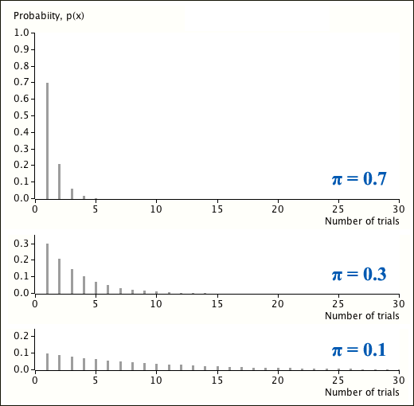

Bernoulli trials until first success
Definition
In a sequence of independent Bernoulli trials with \(P(success) = \pi\) in each trial, the number of trials until the first success is observed has a distribution called a geometric distribution.
\[ X \;\; \sim \; \; \GeomDistn(\pi) \]The probability function of a geometric random variable is relatively simple.
Probability function
If a random variable has a geometric distribution, \(X \sim \GeomDistn(\pi) \), then its probability function is
\[ p(x) = \pi (1-\pi)^{x-1} \quad \quad \text{for } x = 1, 2, \dots \](Proved in full version)
The geometric probability function can be directly shown to satisfy the required properties of a valid probability function.
The second property can be proved using following mathematical result.
Sum of geometric series
If \(-1 < a < 1\), then
\[ \sum_{x=0}^\infty {a^x} = \frac 1 {1-a} \](Proved in full version)
Shape of the geometric distribution
Each geometric probability is \( (1-\pi) \) times that of the previous one, so the probabilities decrease steadily from the mode at \(x = 1\).
